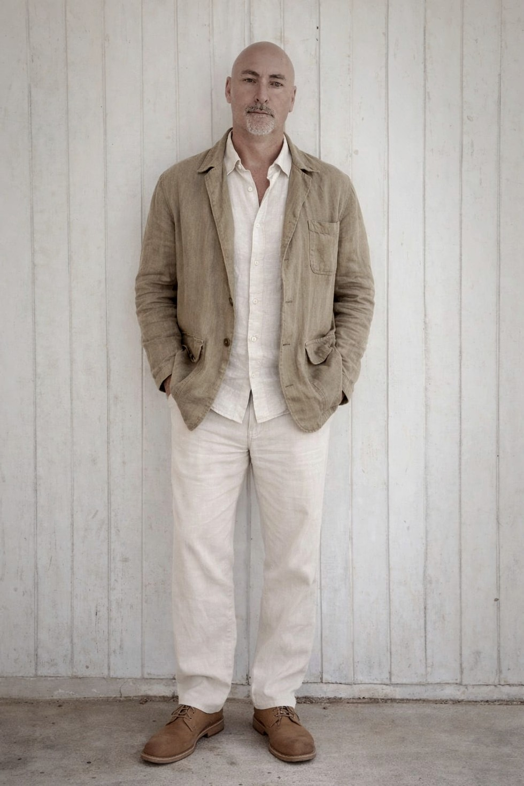

Jorge Riveros
Luminic Realism
Painting the body of light
Where light crosses matter.
Selected Works
Light crossing matter
Statement
Painting as shifting perception
Light moves through matter. Forms emerge, dissolve, and return. Through atmospheric fields and layered veils, these paintings invite a slower way of seeing, where perception itself becomes part of the work.

About
Jorge Riveros
Jorge Riveros is a Chilean self-taught painter. After exhibiting internationally and developing his career in Central America, he stepped away from painting for nearly two decades. Years later, he withdrew to the mountains, where Luminic Realism emerged.
CV
Selected exhibitions
-
2006
Threads of Reality, Galeria Alternativa, Caracas, Venezuela
-
2005
Art Basel Miami, with Galeria Alternativa, Miami, United States
-
2005
Colors of the Soul, Praxis Gallery, Santiago, Chile
-
2005
Permanent Transparency, Galeria Alternativa, Caracas, Venezuela
-
2004
Vital Pulse, Galeria Alternativa (Elvira Nery), Caracas, Venezuela
-
2003
Shhhh, Lastimarte Gallery, Miami, United States
-
2003
Moderato: Nadadist Evanescence, Sala de Espera Gallery, Bogota, Colombia
-
2002
Small-Scale and Micro Landscape, Cuadra Creativa Gallery, Caracas, Venezuela
-
2002
The Poetics of Space, Sala de Espera Gallery, Bogota, Colombia
-
1999
Polo Club Gallery, Zapallar, Chile
Contact